Each skill is a ladder: a fully worked example in the solid-framed box, then four YOUR TURN questions in the dashed box — same skill, new numbers, no help. Work all four before checking the gray check: line; a tracker tick needs all four right first time. A ten-question mixed set follows Ladder 14.
This is the second half of Unit 8, which at 11–15% is the exam's second-heaviest unit. Chapter 14 gave you weak acids in isolation; this chapter puts them in mixtures — which is where nearly all the exam's Unit 8 marks actually live. What you must bring. Chapter 14, Ladders 9, 12 and 16. Every calculation here is a weak-acid equilibrium with an extra stoichiometry step in front of it. If \(K_{a}K_{b} = K_{w}\) and \(\text{p}K_{a}\) are not automatic, fix that first. The one structural idea. Almost every problem in this chapter is two steps: first a stoichiometry step in moles — the strong reagent is consumed completely — and then an equilibrium step on whatever is left. Students who try to do both at once get lost; students who do them in order rarely do. A scope note that matters. The CED excludes two specific things here (Ladders 6 and 14 flag them precisely). Both exclusions are narrower than they first appear, and over-reading either one would make you skip required material — so read those notes rather than guessing.Ladder 1 • The common-ion effect
ZUM §15.1Add acetate to acetic acid and the acid ionises less. That is Le Ch\^atelier applied to a weak acid — and it is the mechanism behind every buffer in this chapter.
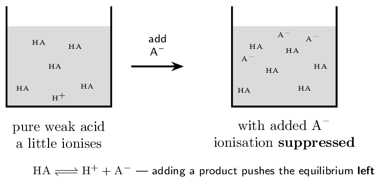
| \([\ce{HA}]\) | \([\ce{H+}]\) | \([\ce{A-}]\) | |
|---|---|---|---|
| I | 0.10 | 0 | 0.10 |
| C | \(-x\) | \(+x\) | \(+x\) |
| E | \(0.10-x\) | \(x\) | \(0.10+x\) |
- Does adding \(\ce{NaF}\) to \(\ce{HF}\) solution raise or lower the pH?
Explain. raises it — equilibrium shifts left
- Does it raise or lower the percent ionisation of \(\ce{HF}\)?
lowers it
- Does it change \(K_{a}\)? no
- Which ion in \(\ce{NaF}\) is the “common” ion, and why is the
other irrelevant? \(\ce{F-}\); \(\ce{Na+}\) is a spectator
(a) raises it — equilibrium shifts left (b) lowers it (c) no (d) \(\ce{F-}\); \(\ce{Na+}\) is a spectator
Ladder 2 • What a buffer is, and why it works
ZUM §15.2A buffer contains appreciable amounts of both members of a conjugate pair. That is the whole definition, and everything else follows from it.
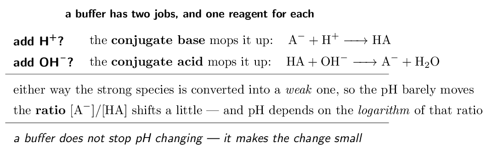
- Which of these is a buffer? \(\ce{HCl}\)/\(\ce{NaCl}\),
\(\ce{HF}\)/\(\ce{NaF}\), \(\ce{HCl}\)/\(\ce{NaOH}\). \(\ce{HF}\)/\(\ce{NaF}\)
- Which component reacts with added \(\ce{OH-}\)?
the weak acid \(\ce{HA}\)
- Write the equation for a buffer absorbing added \(\ce{H+}\).
\(\ce{A- + H+ -> HA}\)
- Does a buffer keep the pH exactly constant? Explain.
no — it makes the change small
(a) \(\ce{HF}\)/\(\ce{NaF}\) (b) the weak acid \(\ce{HA}\) (c) \(\ce{A- + H+ -> HA}\) (d) no — it makes the change small
Ladder 3 • Henderson–Hasselbalch
ZUM §15.2 \[ \text{pH} = \text{p}K_{a} + \log\!\left(\frac{[\ce{A-}]}{[\ce{HA}]}\right) \]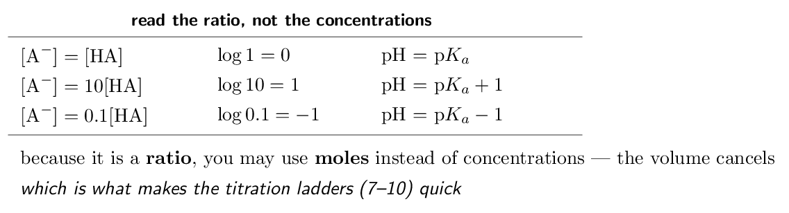
CED topic 8.9's exclusion: “Derivation of the Henderson–Hasselbalch equation will not be assessed on the AP Exam.” So you will never be asked where it comes from — only to apply it. (For the curious: take \(K_{a} = [\ce{H+}][\ce{A-}]/[\ce{HA}]\), solve for \([\ce{H+}]\), and take \(-\log\) of both sides. That is the whole derivation, and it is not examinable.)
- 0.20 M \(\ce{HA}\) and 0.20 M \(\ce{A-}\). Find
the pH.
- 0.10 M \(\ce{HA}\) and 0.010 M \(\ce{A-}\). Find
the pH.
- 0.040 mol \(\ce{A-}\) and 0.020 mol \(\ce{HA}\) in one
solution. Find the pH.
- Why may you use moles instead of concentrations?
the volume cancels in the ratio
(a) 4.74 (b) 3.74 (c) 5.04 (d) the volume cancels in the ratio
Ladder 4 • Designing a buffer
ZUM §15.2Given a target pH, choose the acid first and the ratio second.
So you need about 1.8 moles of acetate for every 1 mole of acetic acid.
Step 3 — choose absolute amounts. The ratio fixes the pH; the concentrations fix the capacity (Ladder 5). Using 0.10 M \(\ce{HA}\) with 0.18 M \(\ce{A-}\) gives pH 5.00, and so does 1.0 M with 1.8 M — but the second buffer will withstand ten times as much added acid or base. Two ways to make it in the lab. Mix the weak acid with its salt directly, or — more common in practice — take the weak acid and add part of the strong base needed to neutralise it. Half-neutralise an acid and you get a buffer at exactly p\(K_{a}\), which is Ladder 12. The choice-of-acid question is the assessed one. If a question gives you four acids and a target pH, the answer is the one whose p\(K_{a}\) is nearest — and the justification is that a ratio near 1 gives comparable amounts of both species and therefore the greatest capacity in both directions.- Which acid would you choose for a pH 7.00 buffer? Why?
\(\ce{HClO}\)
- Which for a pH 3.00 buffer? \(\ce{HF}\)
- For an acid with p\(K_{a} = 4.74\), what ratio gives pH 4.44?
- Two buffers have the same ratio but one is ten times more
concentrated. Do they have the same pH? yes
(a) \(\ce{HClO}\) (b) \(\ce{HF}\) (c) 0.50 (d) yes
Ladder 5 • Buffer capacity
ZUM §15.3Capacity is how much acid or base a buffer can absorb before it stops working. It is set by the absolute concentrations, not the ratio.
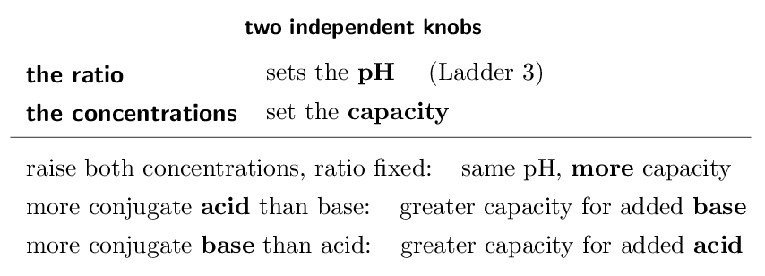
- Two buffers have ratio 1, one at 0.05 M and one at
0.50 M. Which has the higher pH?
neither — same pH
- Which has the greater capacity? the 0.50 M one
- A buffer has more \(\ce{A-}\) than \(\ce{HA}\). Is it better at
absorbing added acid or added base? added acid
- What two conditions give the greatest overall capacity?
equal amounts, both concentrated
(a) neither — same pH (b) the 0.50 M one (c) added acid (d) equal amounts, both concentrated
Ladder 6 • Strong acid \(+\) strong base
ZUM §15.4The simplest mixture, and the template for all the others: do the stoichiometry first, then look at what is left.
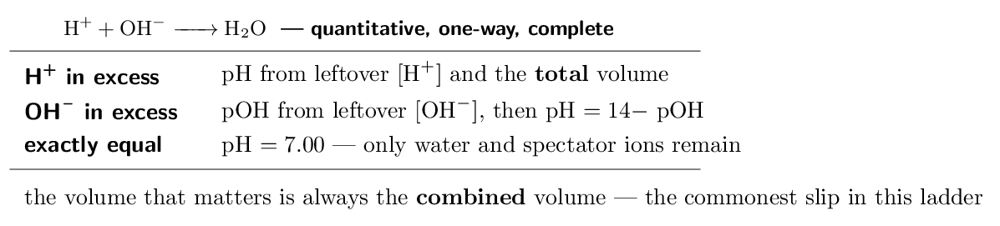
CED topic 8.9 excludes “computation of the change in pH resulting from the addition of an acid or a base to a buffer”. Read that precisely: what is excluded is being handed an existing buffer and asked how much the pH changes. Computing the pH of a mixture made by combining a weak acid with a strong base is topic 8.4.A.2 and is assessed — the CED says so explicitly. Ladders 7–10 are that required material. The two calculations look almost identical, so do not let the exclusion frighten you off the titration work; it is the bulk of Unit 8's marks.
- Mix 25.0 mL of 0.200 M \(\ce{HCl}\)
with 25.0 mL of 0.100 M \(\ce{NaOH}\).
Find the excess in moles. 2.50e-3 mol \(\ce{H+}\)
- Find the pH of that mixture.
- Mix equal volumes of 0.100 M \(\ce{HCl}\) and
0.100 M \(\ce{NaOH}\). Give the pH.
- Why must you use the combined volume?
the solution is diluted on mixing
(a) 2.50e-3 mol \(\ce{H+}\) (b) 1.30 (c) 7.00 (d) the solution is diluted on mixing
Ladder 7 • Weak acid \(+\) strong base: the stoichiometry step
ZUM §15.4Now the reaction that generates a buffer. The strong base is consumed completely, so this step is stoichiometry — no equilibrium yet.
\[ \ce{HA + OH- -> A- + H2O} \]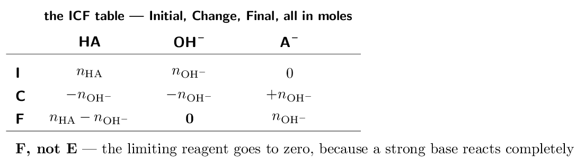
| (mol) | \(\ce{HA}\) | \(\ce{OH-}\) | \(\ce{A-}\) |
|---|---|---|---|
| I | 5.00e-3 | 2.00e-3 | 0 |
| C | \(-2.00e-3\) | \(-2.00e-3\) | \(+2.00e-3\) |
| F | 3.00e-3 | 0 | 2.00e-3 |
- \(\ce{HA}\) and \(\ce{A-}\) both present \(\Rightarrow\) buffer, use H–H
- only \(\ce{A-}\) left \(\Rightarrow\) equivalence point, use \(K_{b}\) (Ladder 9)
- \(\ce{OH-}\) left over \(\Rightarrow\) past equivalence, use excess hydroxide (Ladder 8)
- After 10.0 mL of base, give the moles of
\(\ce{HA}\) and \(\ce{A-}\). 4.00e-3 and 1.00e-3 mol
- Find the pH at that point.
- After 25.0 mL, give the moles of each and the
pH. 2.50e-3 each, pH 4.74
- Why is it an ICF and not an ICE table?
the strong base is consumed completely
(a) 4.00e-3 and 1.00e-3 mol (b) 4.14 (c) 2.50e-3 each, pH 4.74 (d) the strong base is consumed completely
Ladder 8 • The three regions of a titration
ZUM §15.4One titration, three different calculations, and the ICF table tells you which you are in.
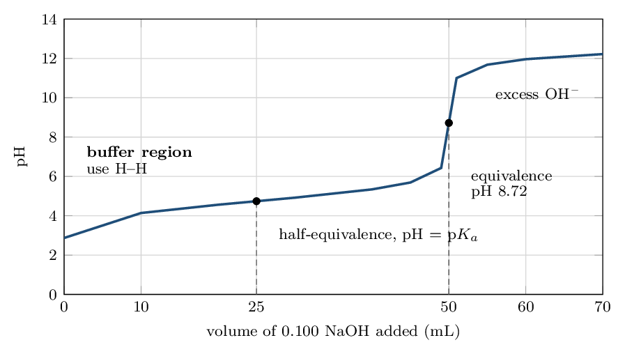
- Which region is 40.0 mL in, and what is the pH?
buffer, pH 5.34
- Which region is 55.0 mL in?
past equivalence
- Find the pH at 55.0 mL.
- Why does the acetate present after equivalence not affect the
pH? the strong base overwhelms it
(a) buffer, pH 5.34 (b) past equivalence (c) 11.68 (d) the strong base overwhelms it
Ladder 9 • pH at the equivalence point
ZUM §15.4At equivalence the acid is exactly consumed and only the conjugate base remains. That is a weak-base problem — Chapter 14, Ladder 11.
- Is the equivalence pH of a weak acid \(+\) strong base titration
above or below 7? Why? above 7 — \(\ce{A-}\) is a weak base
- What volume of 0.100 M \(\ce{NaOH}\) reaches
equivalence for 25.0 mL of 0.100 M
\(\ce{HA}\)?
- At that equivalence point, give \([\ce{A-}]\).
- Which constant do you use at the equivalence point, \(K_{a}\) or
\(K_{b}\)? \(K_{b}\)
(a) above 7 — \(\ce{A-}\) is a weak base (b) 25.0 mL (c) 0.0500 M (d) \(K_{b}\)
Ladder 10 • Weak base \(+\) strong acid
ZUM §15.4The mirror image. Same three regions, same two-step method, everything reflected about pH 7.
\[ \ce{B + H+ -> BH+} \]- Is the equivalence pH above or below 7? Why?
below 7 — \(\ce{NH4+}\) is a weak acid
- In the buffer region, which two species are present?
\(\ce{NH3}\) and \(\ce{NH4+}\)
- 50.0 mL of 0.100 M \(\ce{NH3}\) plus
20.0 mL of 0.100 M \(\ce{HCl}\): find
the pH.
- Which constant do you need for the H–H equation here, and why?
\(K_{a}\) of \(\ce{NH4+}\)
(a) below 7 — \(\ce{NH4+}\) is a weak acid (b) \(\ce{NH3}\) and \(\ce{NH4+}\) (c) 9.44 (d) \(K_{a}\) of \(\ce{NH4+}\)
Ladder 11 • Reading titration curves
ZUM §15.4–15.5Two curves, one titrant, and the differences are all diagnostic.
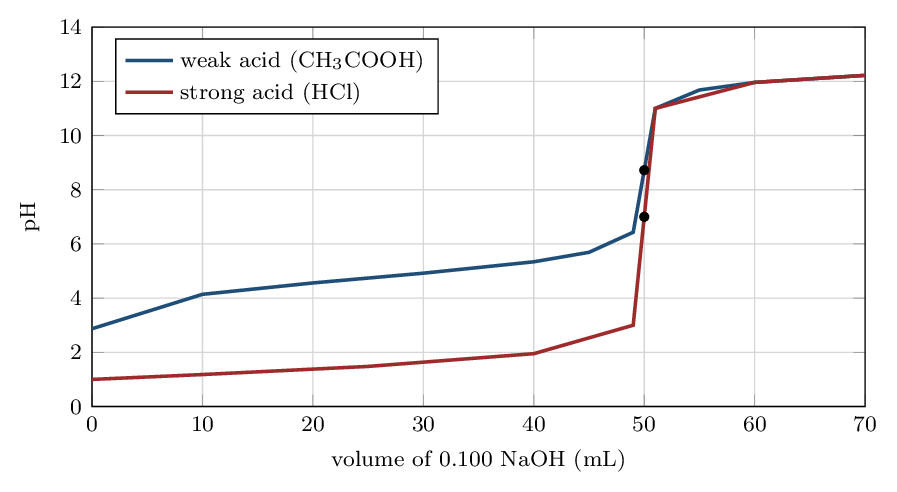
- Two acids of the same concentration are titrated. One curve
starts at pH 1.0 and one at 3.0. Which is weak?
the one starting at 3.0
- A titration curve has equivalence pH 9.0. What kind of acid was
it? weak
- Does a weak acid need more, less, or the same volume of base to
reach equivalence as a strong acid of the same concentration?
the same
- What feature of the curve shows a buffer region?
the flat, gently sloping stretch
(a) the one starting at 3.0 (b) weak (c) the same (d) the flat, gently sloping stretch
Ladder 12 • The half-equivalence point
ZUM §15.4The single most useful point on any weak-acid curve.
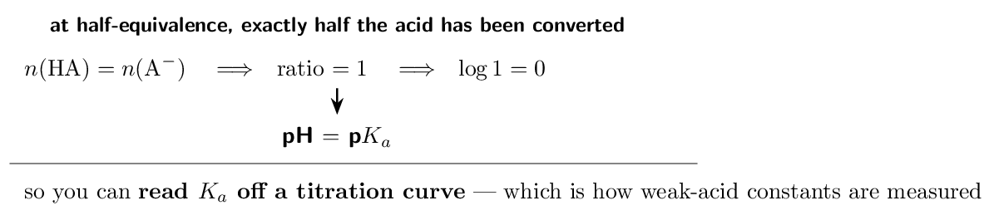
- Equivalence is at 30.0 mL. Where is
half-equivalence?
- The pH there is 4.20. Give p\(K_{a}\) and \(K_{a}\).
4.20 and 6.3e-5
- Why does the logarithm term vanish at half-equivalence?
the ratio is 1
- Can you use this method on a strong acid? Explain.
no — no buffer region
(a) 15.0 mL (b) 4.20 and 6.3e-5 (c) the ratio is 1 (d) no — no buffer region
Ladder 13 • Choosing an indicator
ZUM §15.5An indicator is itself a weak acid whose two forms differ in colour. It changes over roughly \(\text{p}K_{a} \pm 1\).
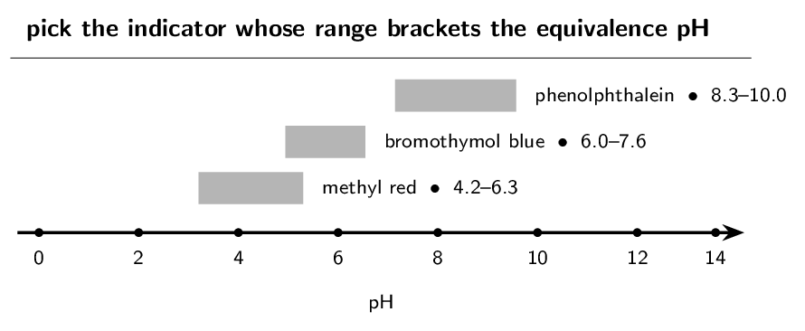
- Which indicator suits an equivalence pH of 9.0?
phenolphthalein
- Which suits an equivalence pH of 5.0?
methyl red
- Distinguish the endpoint from the equivalence point.
observed colour change vs where moles match
- Why can a strong–strong titration tolerate almost any
indicator? the pH jump is very steep
(a) phenolphthalein (b) methyl red (c) observed colour change vs where moles match (d) the pH jump is very steep
Ladder 14 • Polyprotic titration curves
ZUM §15.6A diprotic acid gives up its protons in stages, so its curve has two equivalence points.
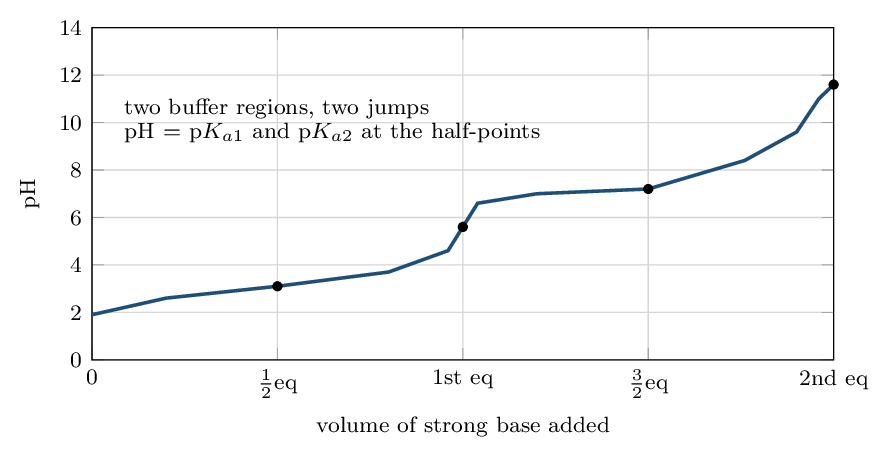
CED topic 8.5's exclusion: “Computation of the concentration of each species present in the titration curve for polyprotic acids will not be assessed on the AP Exam.” The same sentence goes on to say that these computations are in scope for monoprotic acids (that is Ladders 7–10), “as is qualitative reasoning regarding what species are present”. So for polyprotic acids: read the curve, identify the equivalence points, say which species dominates where — but do not expect to calculate concentrations.
- How many equivalence points does a diprotic acid curve have?
two
- If the first is at 20.0 mL, where is the
second?
- Which species predominates between the two equivalence points?
\(\ce{HA-}\)
- What does the pH equal at the first half-equivalence point?
p\(K_{a1}\)
(a) two (b) 40.0 mL (c) \(\ce{HA-}\) (d) p\(K_{a1}\)
Mixed set • ten questions, no labels
Every question so far arrived with its ladder attached. These ten do not — and in this chapter the first decision is almost always which region am I in: excess strong reagent, buffer, or equivalence. Build the ICF table and the region names itself.
- A buffer is 0.20 M \(\ce{HA}\) and 0.10 M
\(\ce{A-}\), p\(K_{a} = 4.74\). Find the pH.
- Mix 40.0 mL of 0.100 M \(\ce{HCl}\)
with 20.0 mL of 0.100 M \(\ce{NaOH}\).
Find the pH.
- Which is a buffer: \(\ce{NH3}\)/\(\ce{NH4Cl}\) or
\(\ce{NaOH}\)/\(\ce{NaCl}\)? \(\ce{NH3}\)/\(\ce{NH4Cl}\)
- Equivalence is at 36.0 mL and the pH at
18.0 mL is 3.80. Find \(K_{a}\).
- Two buffers have the same ratio; one is five times more
concentrated. Compare their pH and capacity.
same pH, 5x capacity
(a) 4.44 (b) 1.48 (c) \(\ce{NH3}\)/\(\ce{NH4Cl}\) (d) 1.6e-4 (e) same pH, 5x capacity
- 50.0 mL of 0.100 M \(\ce{HA}\)
(p\(K_{a} = 4.74\)) plus 30.0 mL of
0.100 M \(\ce{NaOH}\): find the pH.
- The same acid plus 50.0 mL of base: name the
region and say whether the pH is above or below 7.
equivalence, above 7
- Which indicator would you use for that titration?
phenolphthalein
- A weak base is titrated with strong acid. Is the equivalence pH
above or below 7? below 7
- A diprotic acid's first equivalence is at
15.0 mL. Where is the second, and which species
dominates between them? 30.0 mL; \(\ce{HA-}\)
(a) 4.92 (b) equivalence, above 7 (c) phenolphthalein (d) below 7 (e) 30.0 mL; \(\ce{HA-}\)
Mastery tracker
Tick a row only if all four YOUR TURN questions were right on the first attempt. Two rows carry CED exclusions — see the scope notes in Ladders 6 and 14 — but both exclusions are narrow, and everything else here is fully assessed.
| First try? | Skill | Ladder | If not, re-read… |
|---|---|---|---|
| \(\square\) | the common-ion effect | 1 | adding a product shifts left |
| \(\square\) | what a buffer is | 2 | both halves of one pair |
| \(\square\) | Henderson–Hasselbalch | 3 | base on top, use p\(K_{a}\) |
| \(\square\) | designing a buffer | 4 | pick p\(K_{a}\) near the target |
| \(\square\) | buffer capacity | 5 | ratio sets pH, amount sets capacity |
| \(\square\) | strong \(+\) strong | 6 | moles first, total volume |
| \(\square\) | the ICF stoichiometry step | 7 | F, not E |
| \(\square\) | the three regions | 8 | the F row picks the method |
| \(\square\) | the equivalence point | 9 | not pH 7 — use \(K_{b}\) |
| \(\square\) | weak base \(+\) strong acid | 10 | convert \(K_{b}\) to \(K_{a}\) |
| \(\square\) | reading titration curves | 11 | same volume, different shape |
| \(\square\) | the half-equivalence point | 12 | pH \(=\) p\(K_{a}\) |
| \(\square\) | choosing an indicator | 13 | bracket the equivalence pH |
| \(\square\) | polyprotic curves | 14 | shapes yes, computations no |
| \(\square\) | mixed set (8 of 10) | — | whichever it exposed |
14/14 and the mixed set: Unit 8 is complete, and it is the largest single block of marks in the course after Unit 3.
10–13: look at where. Ladders 1–5 are buffers and repair quickly. Ladders 6–10 are the two-step method, and nearly every miss there is one of two things: forgetting the total volume, or trying to do stoichiometry and equilibrium in the same table. Both are mechanical and both are fixable in an afternoon.
9 or fewer: do not practise more problems yet. Go back to Ladder 7 and build the ICF table for five different volumes of the same titration, stopping each time at the F row without computing a pH. The skill this chapter actually tests is recognising which of three situations you are in; the arithmetic afterwards is Chapter 14's and you already have it.
Where this sits. Chapters 14 and 15 together are Unit 8 — 11–15% of the exam. With this chapter done, the self-study series is complete: every chapter of Zumdahl that the CED assesses now has one.